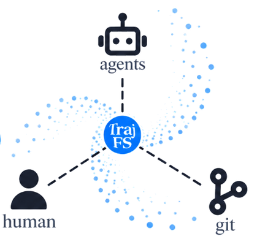
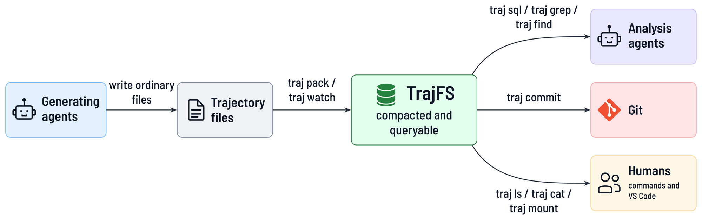
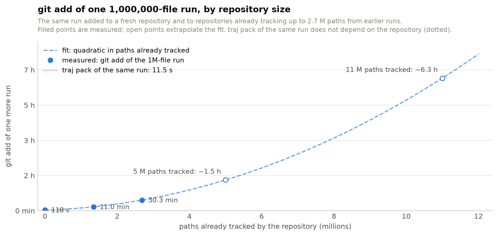
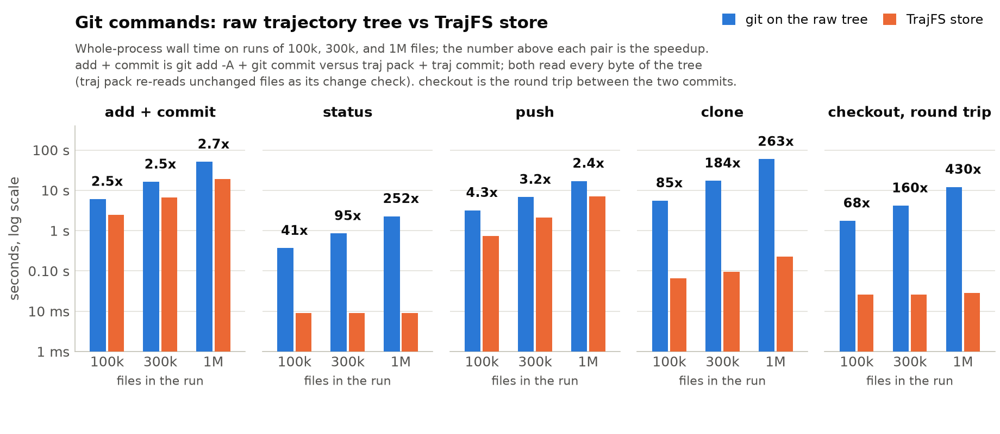
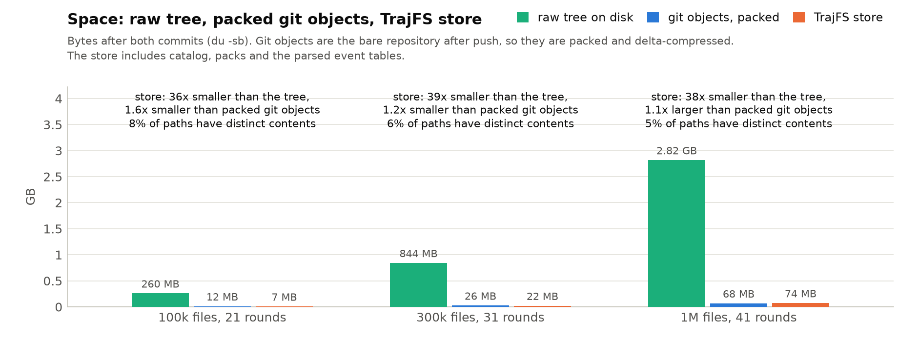
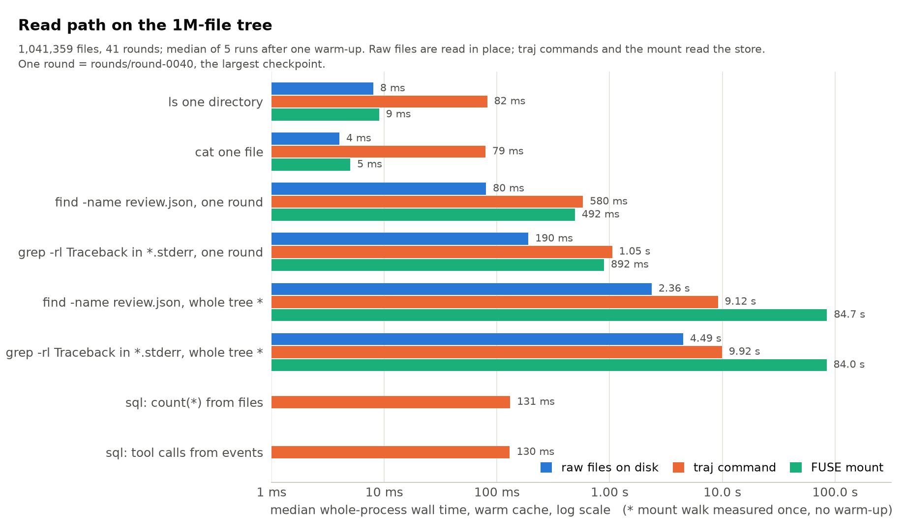

Gittable version control for AI-agent trajectories

Make millions of AI-agent trajectory files gittable.
Faster for Git. Friendly to agents. Still files for humans.
AI-agent runs produce millions of tiny, duplicate-heavy files, and Git operations on them take hours. TrajFS packs a run into one compact, queryable store without changing the agents. Git handles the store in seconds, analysis agents query it, and humans still open it as files.
Recorded on a synthetic 1,000,000-file run: 40 rounds of a coding agent, 5% distinct content, the rest byte-identical checkpoints.
Every number shown is measured; demo/ in the repository regenerates it.
A run becomes a handful of files: content-addressed packs and a columnar catalog. Status, clone, and checkout stop paying per trajectory file.
traj grep, traj find, and SQL over parsed event tables answer "which round first hit a
Traceback?" without touching a million inodes. A shipped skill teaches coding agents the verbs.
A read-only FUSE mount serves the store as ordinary files. New batches appear without remounting;
traj extract gives writable copies.

Archive one task in three steps. The example is a coding agent that worked in rounds under /data/tasks/task-a;
TrajFS does not require this layout.
The source stays where it is. The adapter parses the runner's event streams into queryable tables; build products are excluded by default. Run it again later and only what changed is appended.
traj pack /data/tasks/task-a --out stores/task-a.trajstore --adapter copilot-cliA million-path run becomes a handful of files that Git handles in seconds.
traj commit --push stores/task-a.trajstoreNo Git checkout, no extraction. traj grep searches each distinct content once, so duplicate checkpoints cost nothing extra.
export TRAJ_STORE="$PWD/stores/task-a.trajstore"
traj ls -l rounds/round-0007/reviewer # list, like ls
traj cat rounds/round-0007/reviewer/review.json # read one file
traj find --name review.json # every review, every round
traj grep -l -e Traceback --name '*.stderr' # which logs failed
traj sql "SELECT tool_name, count(*) AS calls FROM events
WHERE type = 'tool.execution_complete' GROUP BY 1 ORDER BY 2 DESC"
traj verify --deep # every stored byte matches its hashExport a skill and an AGENTS.md section into your repository, so Claude Code, Codex, or Copilot reach for
traj grep, traj sql, and traj cat instead of walking a million files.
traj skill export --out .On Linux, mount the store read-only and open it in a terminal or VS Code. Newly packed batches show up without remounting.
traj mount ~/traj-mnt/task-a --daemon
ls ~/traj-mnt/task-a/rounds/round-0007/reviewer
code -r ~/traj-mnt/task-a
traj umount ~/traj-mnt/task-aTrajFS separates what the bytes are from where they appear. That single decision is what makes millions of duplicate-heavy files cheap.
Every file is hashed with SHA-256 and stored once, in Zstandard-compressed pack frames. A checkpoint that repeats yesterday's workspace adds paths, not bytes.
Paths, directory summaries, exclusions, and the hash-to-pack index are Parquet segments. Listing or finding is a column scan, and the same segments are the tables behind traj sql.
Each pack appends a batch and publishes it in the manifest at the end. Readers only ever see complete batches; an interrupted pack leaves nothing visible.
Adapters parse Copilot CLI, Codex CLI, Claude Code, generic JSONL, or a TOML-described layout into event tables that embedded DuckDB queries. text(sha) reaches stored content from SQL.
traj mount serves the catalog through FUSE with a bounded memory budget, so editors, diff tools, and shell scripts see ordinary files without extraction.
traj commit stages the store, a pre-commit hook refuses raw run trees and oversized artifacts, and every generated file stays under a size Git hosts accept.
task-a.trajstore/
MANIFEST.json published batches and artifact inventory
catalog/*.parquet paths, directory summaries, exclusions
packs/*.pack compressed content
packs/index-*.parquet hash-to-pack locations
derived/<adapter>/*.parquet rebuildable event tables| Layer | Technology |
|---|---|
| CLI and ingestion | Rust, Clap, Rayon for parallel hashing and compression |
| File content | SHA-256-addressed blobs in Zstandard packs |
| Catalog and events | Apache Arrow / Parquet |
| Queries | Embedded DuckDB over the Parquet files |
| File access | Optional Linux FUSE through fuser |
| Runner integration | TOML adapters and rules, Git hooks, exported agent skill |
Synthetic data anyone can regenerate: a coding agent's task directory checkpointed every round, so only about 5% of a million paths have distinct contents. Whole-process wall time, warm cache, on a 40-core Xeon with ext4. Tables and reproduction commands.
git add one more runtraj pack of the same rungit clone
traj pack stays at 11.5 s.
A cold disk adds a floor for any tool, about 80 min for the first read of a million files.
Measurements and method.
status walks the tree, clone and checkout materialize every file,
push sends every object. The store is a handful of files.

ls and cat.
Whole-tree scans should use traj grep, traj find, or SQL, which read the catalog and each distinct content once.TrajFS runs on Linux. DuckDB is bundled; there is no service to install. Mounting needs FUSE, everything else works without it.
Paste this into Claude Code, Codex, or Copilot CLI in the repository where you keep experiments.
The first build compiles the bundled DuckDB and takes a few minutes. Add --no-default-features for a smaller binary with neither SQL nor mounting.
# Debian / Ubuntu prerequisites (fuse3 only for mounts)
sudo apt-get update && sudo apt-get install -y build-essential pkg-config fuse3
curl --proto '=https' --tlsv1.2 -sSf https://sh.rustup.rs | sh # if you have no Rust toolchain
cargo install --locked --git https://github.com/jingliu9/TrajFS traj
traj --helpEverything past the quick start lives in the repository.